Bee keeping: Eco-Friendly Livelihood Program

■ Rearing of honey bees or beekeeping is called Apiculture (madhumakhi palan in Hindi).
■ Beekeeping has been practiced since ancient times, and depictions have also been seen on the walls of the NyuserreIni sun temple from before 2422 BCE. In these illustrations, workers are seen blowing smoke into hives while they remove honeycombs.
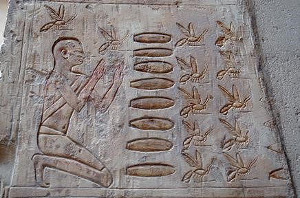■ Since 2006 beekeepers have been noticing their honeybee populations have been dying off at increasingly rapid rates.
■ Out of the 100 crop species that provide us with 90% of our food, 70% are pollinated by bees.
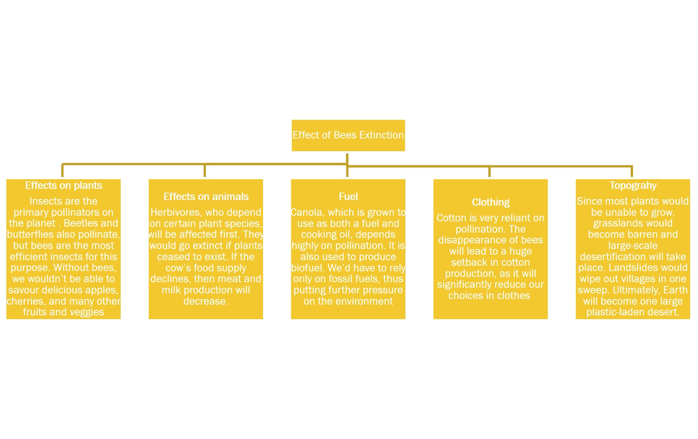The main reasons for global bees-decline are industrial agriculture, parasites/pathogens and climate change. The loss of biodiversity, destruction of habitat and lack of forage due to monocultures and bee-killing pesticides are particular threats for honeybees and wild pollinators.
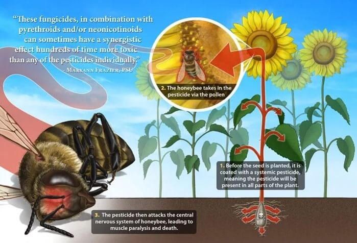 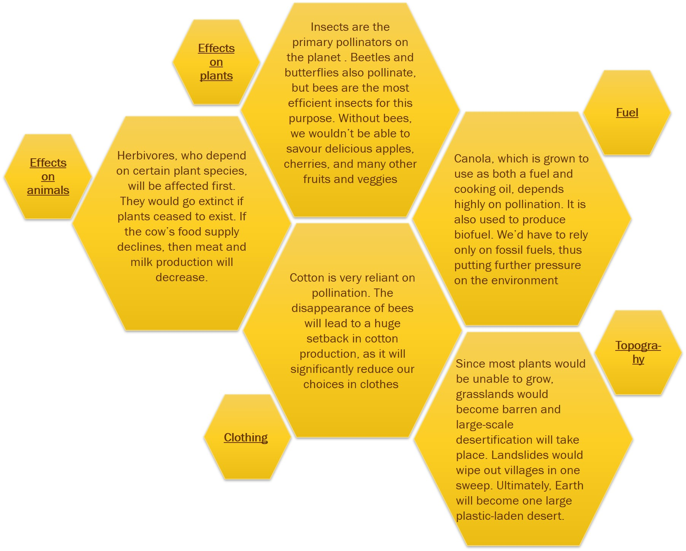Impact Of Reduction In Bee Populations:
Advantages Of Increasing Beekeeping:
There are many reasons for an individual or a community to pursue beekeeping as a practice.Here are some of the key advantages:
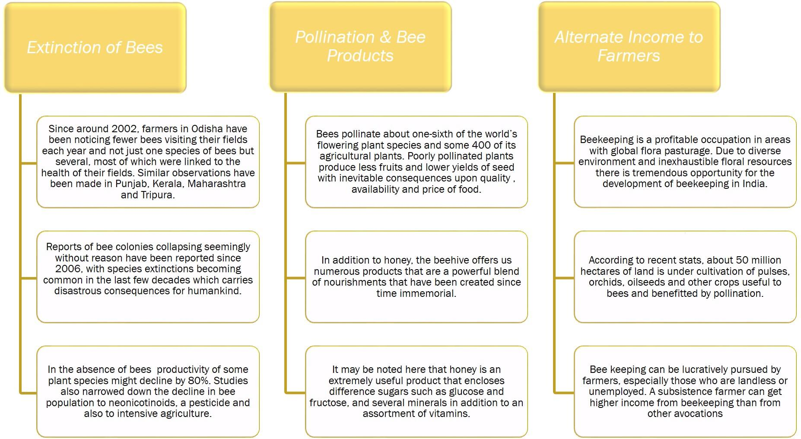Extinction of Bees
- • Since around 2002, farmers in Odisha have been noticing fewer bees visiting their fields each year and not just one species of bees but several, most of which were linked to the health of their fields. Similar observations have been made in Punjab, Kerala, Maharashtra and Tripura.
- • Reports of bee colonies collapsing seemingly without reason have been reported since 2006, with species extinctions becoming common in the last few decades which carries disastrous consequences for humankind.
- • Since around 2002, farmers in Odisha have been noticing fewer bees visiting their fields each year and not just one species of bees but several, most of which were linked to the health of their fields. Similar observations have been made in Punjab, Kerala, Maharashtra and Tripura.
Pollination & Bee Products
- • Bees pollinate about one-sixth of the world’s flowering plant species and some 400 of its agricultural plants. Poorly pollinated plants produce less fruits and lower yields of seed with inevitable consequences upon quality, availability and price of food.
- • In addition to honey, the beehive offers us numerous products that are a powerful blend of nourishments that have been created since time immemorial.
- • It may be noted here that honey is an extremely useful product that encloses difference sugars such as glucose and fructose, and several minerals in addition to an assortment of vitamins.
Alternate Income to Farmers
- • Beekeeping is a profitable occupation in areas with global flora pasturage. Due to diverse environment and inexhaustible floral resources there is tremendous opportunity for the development of beekeeping in India.
- • According to recent stats, about 50 million hectares of land is under cultivation of pulses, orchids, oilseeds and other crops useful to bees and benefitted by pollination.
- • Bee keeping can be lucratively pursued by farmers, especially those who are landless or unemployed. A subsistence farmer can get higher income from beekeeping than from other avocations
■ India today has about eight lakh bee colonies. considering the modern beekeeping which arrived in India only three decades ago with the advent of the Khadi and Village Industries Commission (KVIC), today the number of bee colonies and beekeeper's co-operatives are 8,10,807 and 169 respectively.
■ It has made good progress in Kerala, Tamil Nadu, West Bengal, Bihar, Orissa, Himachal Pradesh, Kashmir, Punjab, Meghalaya, Andaman and Nicobar islands are the important states in which beekeeping co-operatives are active.
Challenges in increasing beekeeping practice are:
■ Non-availability or non-affordability of honey boxes to the beekeepers,
■ Lack of honey marketing channels, and,
■ Inadequate training in the management of apiary
■ Provide bee colonies to the farmers in our project regions in Assam and Odisha and educate/train them for utilization of bee colonies for managed bee pollination.
■ Educate the bee farmers on production of bee colonies and their management through skill training.
■ Produce quality queens avoiding inbreeding and enhance honey yield producing populous colony.
■ Employment generation and increase the subsidiary income of farmers without much investment. Thus improving the financial stability of the farmers.
■ To increase the bio-diversity by pollination support of honey bees.
■ To increase honey production and crop production of the state as a whole through adoption of modern technology on keeping.
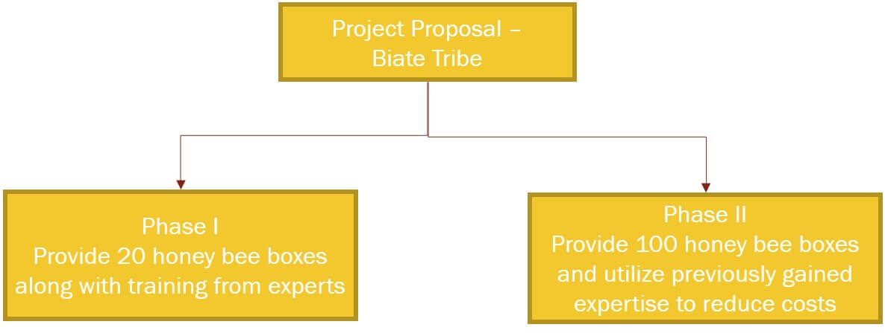Capital Investment in Phase 1
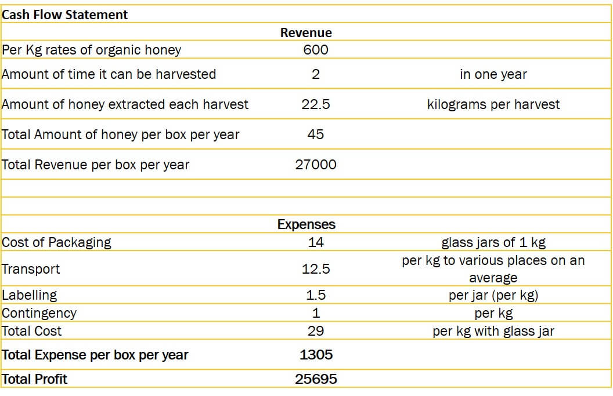Phase I Cash Flows
 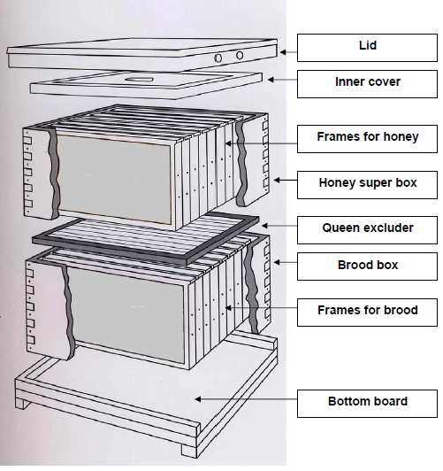
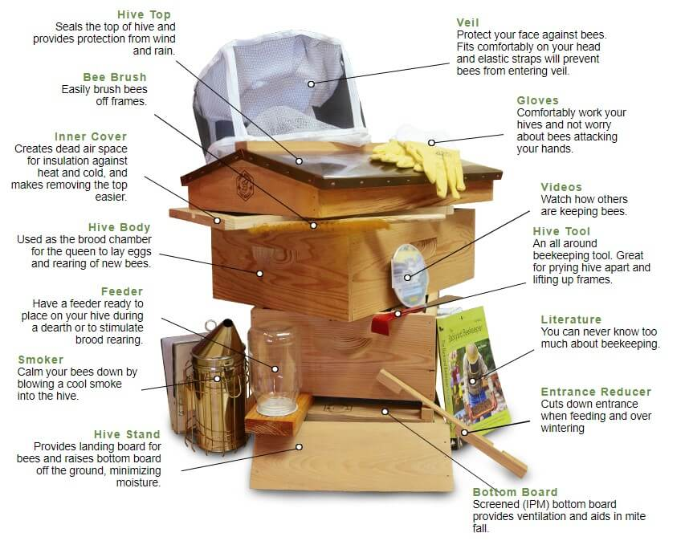
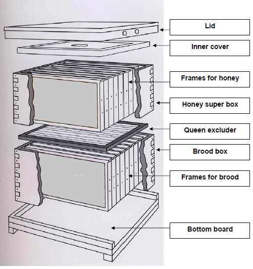
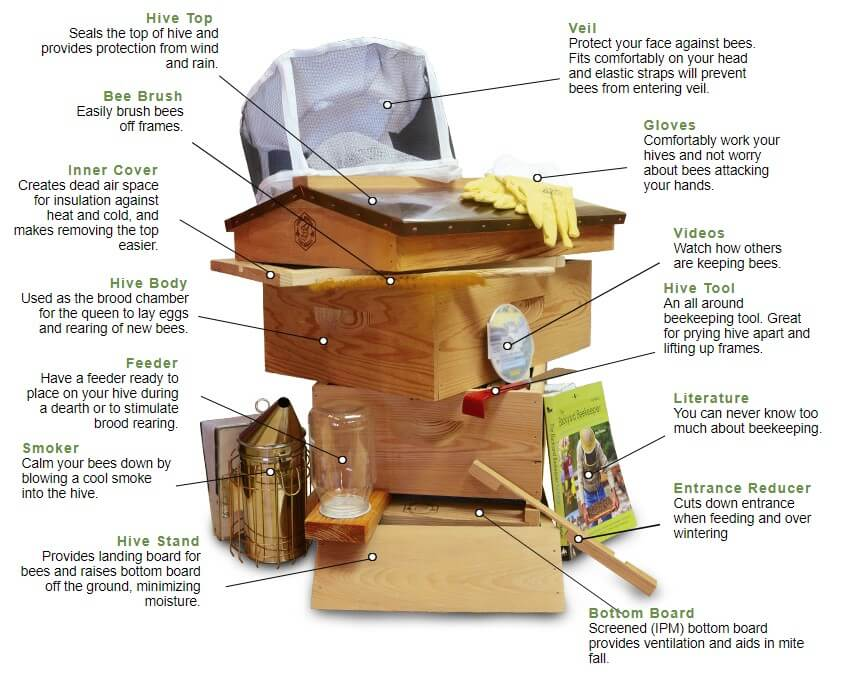
By Products
Apart from honey, there are other commercially important by-products like royal jelly, bees wax, pollen, propolis and bee venom.
Royal Jelly
It is a secretion from the hypo pharyngeal glands of nurse-bees. Queen larva and the young workers feed on royal jelly. It is milky in colour and contains proteins, lipids, carbohydrates, minerals like iron, Sulphur, copper and silicon. It increases the vitality and vigour in humans.
Beeswax
Beeswax is secreted as a liquid but solidifies when exposed to air. Scales are formed after solidification which is removed by the hive-bees for building the comb. Although the wax is white in colour, the shade varies depending on the pollen pigments. It is chiefly used in the candle industry. Other major places where the bees wax is important are for making creams, ointments, capsules, deodorants, varnish, shoe polish, etc.
Propolis
Propolis is the resin-like exudate collected by honey bees from the trees. It is used by them for sealing the cracks and crevices.It has an adhesive quality and hence mixed with Vaseline. It also has burn healing property and used for preparing ointments that treats cuts, wounds, etc
Bee Venom
It is an important secretion used by the worker bees as a defence mechanism. It contains active chemicals like histamine, hydrochloric acid, formic acid, calcium, Sulphur, apamine, etc. Commercially it is obtained through electric shock.
The hives are connected to a live circuit of 12-15 volts. Whenever the bees get in touch with the wire they receive the shock which irritates them and they react by depositing venom. Bee venom is injected into patients suffering from rheumatism. They cannot be cured by any other method. It also helps in curing neuralgia, endo-arthritis, necrosis, etc.